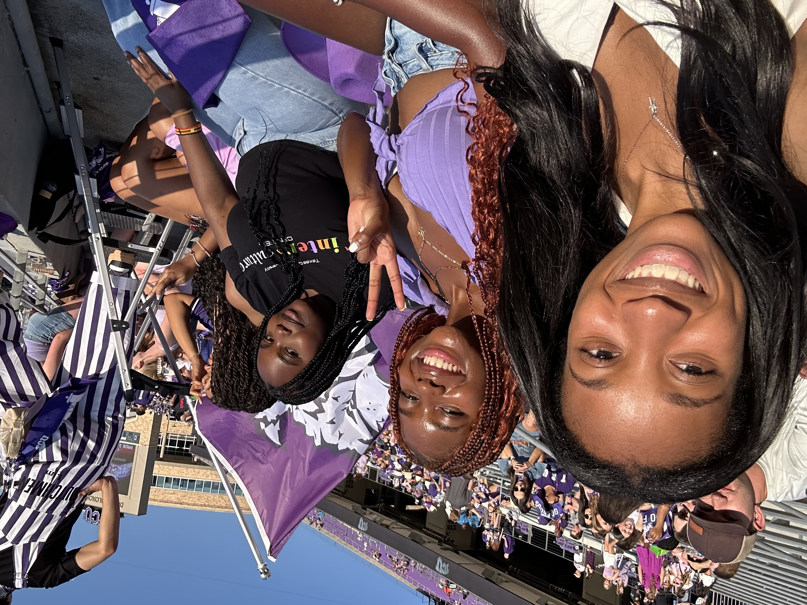

My TCU Experience
As a senior preparing to attend my last first football game as a TCU undergraduate student, one of my most memorable experiences has been attending games with my friends.
My Background
I was born in Uganda and later moved to the United States. I am currently studying Digital Culture and Data Analytics and Sociology at TCU.
My interests connect technology, data, people, and communication. I want to continue developing technical skills that can help me become a stronger professional candidate after graduation.
What I Want to Learn
I want to learn more about web development and understand how websites are created from the structure of HTML to the design and layout created with CSS.
I also want to see how much my portfolio changes throughout the course and use what I learn to create something I can continue improving professionally.